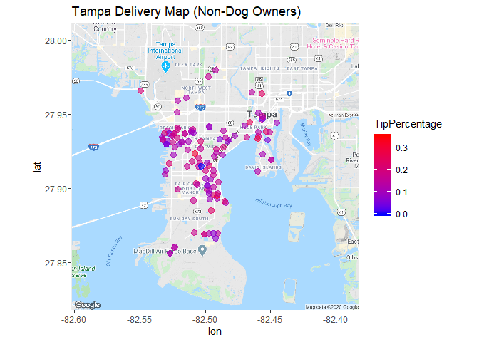

Delivery Customer Data of 199 Observations with Data Taken on the Following Variables:
Date | Address | Order Amount | Tip Amount | Age | Time | Tip Included | Dog Owner
=======================================================
p1 = ggplot(mtcars, aes(mpg, wt, color = cyl)) + geom_point()
ggplotly(p1)Delivery Map of Tampa, Florida Based on Tip Percentage of Total Order (Tip Percentage)

Average Tip Percentage of Dog Owners is 0.1417
 Average Tip Percentage of Non-Dog Owners is 0.1429.
Scatterplot of Tip Percentage of Total Order by Dog Owner
Scatterplot by Gender
Average Tip Percentage of Males is 0.1406
Average Tip Percentage of Females is 0.145

ggplot(df, aes(df$Age, df$TipPercentage, color = df$Gender)) +
geom_jitter(size = 3) + xlab("Age") + ylab("Tip Percentage") +
labs(color = "Gender") + ggtitle("Percentage of Tip Based on Age") +
geom_smooth(method = "lm")Time Sequence Bar Chart of Orders Placed by Gender

Time Sequence Plots by Dog Owner vs. No Dog Owner
Time Sequence Dot Plot of Orders Placed and Tip Amount ($)
Time Sequence Dot Plot of Orders Placed

Linear Models
ggplot(df, aes(df$OrderAmt, df$TipAmt, size = df$Age, fill = Gender)) +
geom_point() + geom_smooth(method = lm, show.legend = FALSE) +
xlab("Order Amount") + ylab("Tip Amount") + scale_color_gradient(low = "blue",
high = "red") + labs(size = "Age", color = "Annual Precipitation")